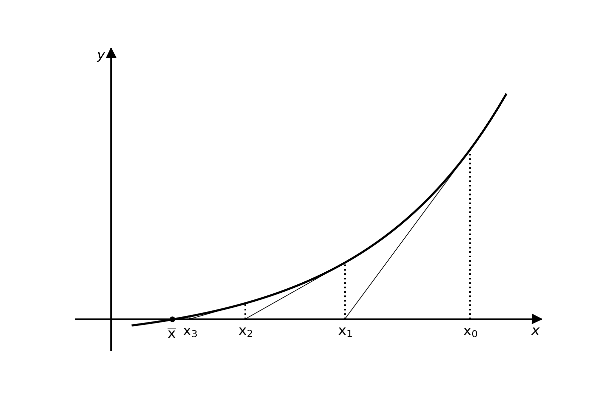

2.4 Método de Newton-Raphson#
Sabemos que muitos problemas em ciências e engenharia envolvem a resolução de uma equação que pode ser colocada na forma
Sabemos também que, em muitos casos, a solução exata \(\overline{x}\) só pode ser encontrada por processos numéricos. Uma solução numérica é geralmente obtida por meio de um processo iterativo que gera uma sequência de soluções aproximadas, que converge para a solução exata, a partir de uma aproximação inicial \(x_0\).
O Método de Newton (Newton-Raphson ou método das tangentes) para zeros de funções reais em uma variável pode ser deduzido a partir do método do ponto fixo, ao buscar uma função de interação \(\phi(x)\) tal que \(|\phi'(x)|<1\). Dessa forma, escolhendo uma “boa” aproximação inicial \(x_0\), garantimos que a sequência de soluções aproximadas irá convergir para a solução exata \(\overline{x}\).
Para isso, estabelecemos que \(|\phi'(\overline{x})|=0\), assim, espera-se que em torno de \(\overline{x}\) tenhamos \(|\phi'(x)|<1\). Para encontrar a função de iteração \(\phi(x)\) que satisfaça essas condições, começamos multiplicando \(f(x)=0\) por uma função desconhecida \(\theta(x)\) e somamos \(x\) em ambos os lados da equação obtendo
ou
nas quais \(\theta(x)\) é uma função de \(x\) tal que \(\theta(\overline{x})\neq 0\). Então, para o ponto fixo \(x=\overline{x}\) tem-se \(\phi(\overline{x}) = \overline{x}\).
Derivando a função \(\phi(x)\) e avaliando no ponto fixo obtemos: $\(\phi'(x) = 1+\theta'(x)f(x) + \theta(x)f'(x)\)$
avaliando em \(\overline{x}\) (lembrando que \(f(\overline{x})=0\) e \(\theta'(\overline{x})=0\)), obtemos:
então $\( \theta(\overline{x}) = -\frac{1}{f'(\overline{x})} \)$
Assim, escolhento \(\theta(x) = -\frac{1}{f'(x)}\) e substituindo em \(\phi(x) = x+\theta(x)f(x)\) obtemos a função de iteração $\( \phi(x) = x - \frac{f(x)}{f'(x)}\)$
que fornece o processo iterativo do método de Newton-Raphson : $\( x_{i+1} = x_i - \frac{f(x_i)}{f'(x_i)}\)$
a partir de uma aproximação inicial \(x_0\), para \(i=1,2,3,...\).
Figura 2.4.1 - Interpretação geométrica do método de Newton
Vejamos agora alguns exemplos. Iniciamos importando as bibliotecas numpye matplotlib.
import numpy as np
import matplotlib.pyplot as plt
Exemplo 2.4.1: Encontre a raiz de \(f(x)=ln(x)+x-4\)
Para obter uma aproximação inicial podemos usar um plot minimalista,fazendo.
xi = np.linspace(0.1, 5)
plt.figure(figsize=(4,3))
plt.plot(xi, np.log(xi), xi, 4-xi)
plt.grid()
plt.show()
O gráfico mostra que existe uma raiz entre 2 e 3, então, iniciando com \(x_0=2\) obtemos pelo método de Newton:
\(x_1 = x_0-\frac{f(x_0)}{f'(x_0)}=2-\frac{ln(2) +2 -4}{1/2+1}=2.871235\)
\(x_2 = x_1-\frac{f(x_1)}{f'(x_1)}=2-\frac{ln(2.871235) +2.871235-4}{1/2.871235+1}=2.926137\)
\(x_3 = x_2-\frac{f(x_2)}{f'(x_2)}=2.926137-\frac{ln(2.926137) +2.926137 -4}{1/2.926137+1}=2.926271\)
Assim, em três interações chega-se a uma solução com \(E=0.000046\). Usando Python podemos chegar a esses resultados com o código mostrado abaixo:
f = lambda x: np.log(x)+x-4.0
df = lambda x: 1./x +1
x = 2
x_ant = x
err = 10.0
while err>0.0001:
x = x - f(x)/df(x)
err = abs(x-x_ant)/abs(x)
x_ant = x
print ("| x=%.6f"%x, "| err=%.6f"%err)
| x=2.871235 | err=0.303436
| x=2.926137 | err=0.018762
| x=2.926271 | err=0.000046
Fazendo o gráfico apenas para conferir
f = lambda x: np.log(x)+x-4.0
xi = np.linspace(1, 5, 31)
plt.figure(figsize=(4,3))
plt.plot(xi, f(xi), "-")
plt.plot(x, f(x), ".")
plt.grid()
plt.show()
Exercício 2.4.1: Usando o método de Newton, resolva as equações a seguir com precisão de 5 casas decimais.
a) \(f(x)=x^3+8 x^2-4 x-2=0\)
b) \(f(x)=2 x-e^{-x}=0\)
c) \(f(x)=\ln (x)-\operatorname{sen}(x)=0\)
O método de Newton e a série te Taylor#
O método de Newton também pode ser deduzido a partir do polinômio de Taylor em torno de \(x_0\):
desprezando os termos de maior grau, os quais assumem valores muito pequenos para \(x\) suficientemente próximo de \(x_0\), obtemos a seguinte aproximação para \(f(x)\):
fazendo \(x=\overline{x}\), como \(f(\overline{x})=0\), tem-se:
ou
que fornece o processo iterativo
Dizemos que um método iterativo apresenta convergência quadrática se
em que \(k\) é chamada constante assintótica de proporcionalidade, \(e_i=\left|x_i-\bar{x}\right|\) e \(e_{i+1}=\left|x_{i+1}-\bar{x}\right|\) são os erros cometidos nas iterações correspondentes.
O método de Newton apresenta convergência quadrática, se \(f^{\prime}(\bar{x}) \neq 0\).
Exemplo 2.4.2: Usando o método de Newton, resolva a equação \(2x-e^{-2x}=0\), com \(\epsilon = 0.0001\).
f = lambda x: 2*x-np.exp(-2*x)
xi = np.linspace(-2, 2)
plt.figure(figsize=(4,3))
plt.plot(xi, f(xi))
plt.grid()
plt.show()
Pelo gráfico podemos deduzir que a raiz está entre \(0\) e \(1\), tomemos \(x_0=0,5\).
x0 = 0.5
df = lambda x: 2+2*np.exp(-2*x)
# Inicializando as variáveis
err = 10.0
x_ant = x0
eps = 0.0001
while err>eps:
x = x_ant-f(x_ant)/df(x_ant)
err = abs(x-x_ant)/x
x_ant = x
print ("x=%.5f, "%x, " err=%.5f"%err)
x=0.26894, err=0.85914
x=0.28349, err=0.05133
x=0.28357, err=0.00028
x=0.28357, err=0.00000
Exercícios:
1. Utilize o método de Newton para encontrar soluções com precisão de \(10^{-5}\) para os problemas a seguir (Fonte: Burden et al., 2016):
a) \(e^x+2^{-x}+2 \cos x-6=0\)
b) \(\ln (x-1)+\cos (x-1)=0\)
c) \(2 x \cos 2 x-(x-2)^2=0\)
d) \((x-2)^2-\ln x=0\)
e) \(e^x-3 x^2=0\)
f) \(\operatorname{sen} x-e^{-x}=0\)
g) \(x^3+3 x^2-1=0\)
h) \(x^3-2 x^2-5=0\)
i) \(x-0,8-0,2 \operatorname{sen} x=0\)
2. Use o método de Newton-Raphson para determinar uma raiz real de \(f(x)=-1+5,5 x-4 x^2+0,5 x^3\) usando aproximações iniciais (a) 4,52 e (b) 4,54 . Discuta e use métodos gráficos e analíticos para explicar quaisquer peculiaridades nos seus resultados (Fonte: Chapra, 2016).
3. Use o método de Newton-Raphson para encontrar a raiz de
Use aproximações iniciais de (a) 2, (b) 6 e (c) 8 . Explique seus resultados (Fonte: Chapra, 2016)..
4. A função descrita por \(f(x)=\ln \left(x^2+1\right)-\mathrm{e}^{0,4 x} \cos \pi x\) tem um número infinito de zeros (Fonte:Burden et al., 2016).
a) Determine, com precisão de \(10^{-6}\), o único zero negativo.
b) Determine, com precisão de \(10^{-6}\), os quatro menores zeros positivos.
c) Determine uma aproximação inicial razoável para determinar o enésimo menor zero positivo de \(f\).
d) Utilize a parte (c) para determinar, com precisão de \(10^{-6}\), o \(25^{\circ}\) menor zero positivo de \(f\).